Ceph集群Docker容器化部署
目标：使用Docker部署Ceph存储集群
环境：CentOS 7
步骤：建立Ceph专用网络->建立Monitor->建立OSD->建立RGW并测试对象存储->建立MDS并测试文件系统->建立MGR
前期准备：Linux主机需提前安装Docker
1.建立Ceph专用网络
为了和docker预设网络区别，新建一个ceph集群专用网络：
docker network create --driver bridge ceph-net
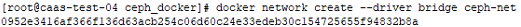
docker network inspect ceph-net
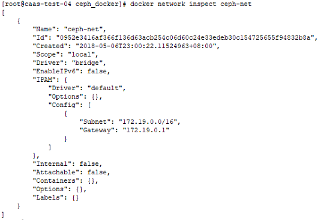
2.建立Monitor
完成专用网络构建后，开始部署ceph集群，第一步为启动Ceph Monitor - 集群监控容器。
Ceph Monitor 维护着展示集群状态的各种图表。
路径设置：DIR $(pwd)
docker run -d --net=ceph-net -v ${DIR}/ceph:/etc/ceph -v ${DIR}/lib/ceph/:/var/lib/ceph/ -e MON_IP=172.19.0.2 -e CEPH_PUBLIC_NETWORK=172.19.0.0/16 --name=mon1 ceph/daemon mon
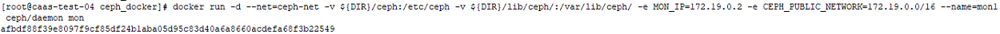
查看monitor部署情况：
docker exec -ti mon1 ceph -v
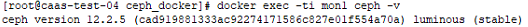
docker exec -ti mon1 ceph -s
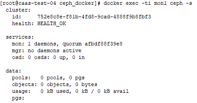
3.建立OSD
Ceph OSD为对象存储守护进程，提供实际的存储，默认情况下ceph集群需要部署3个OSD。
环境准备：为Linux主机添加3块20GB硬盘(/dev/vdb、/dev/vdc、/dev/vdd)
docker run -d --net=ceph-net --privileged=true --pid=host -v ${DIR}/ceph:/etc/ceph -v ${DIR}/lib/ceph/:/var/lib/ceph/ -v /dev/:/dev/ -e OSD_DEVICE=/dev/vdb -e OSD_TYPE=disk -e OSD_FORCE_ZAP=1 --name osd1 ceph/daemon osd
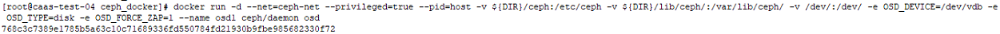
查看osd部署情况：
docker exec -ti osd1 df | grep "osd"
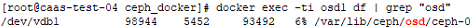
docker exec -ti mon1 ceph -s
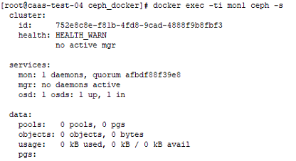
osd2与osd3部署过程类似，只需将/dev设备换成对应的即可。
4.建立RGW并测试对象存储
Ceph RGW - Rados网关：提供S3与Swift相容的API，存储数据至对象存储。
docker run -d --net=ceph-net -v ${DIR}/lib/ceph/:/var/lib/ceph/ -v ${DIR}/ceph:/etc/ceph -p 8080:8080 --name=rgw1 ceph/daemon rgw
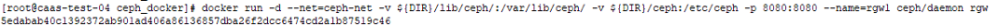
curl工具测试部署情况：
curl -H "Content-Type: application/json" "http://127.0.0.1:8080"
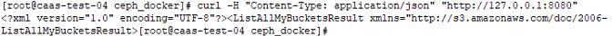
下载测试文件：
wget "https://gist.githubusercontent.com/kairen/e0dec164fa6664f40784f303076233a5/raw/33add5a18cb7d6f18531d8d481562d017557747c/s3client"
chmod u+x s3clinet
安装执行依赖：
yum install python-pip
pip install boto
对象存储测试：
(1)创建一个使用者
docker exec -ti rgw1 radosgw-admin user create --uid="test" --display-name="I'm Test account" --email="test@example.com"
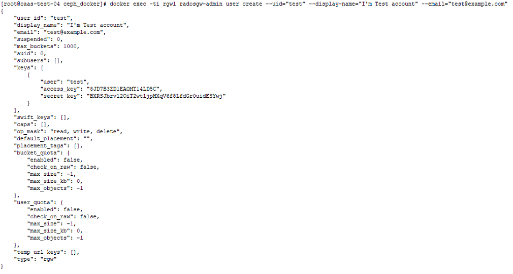
(2)创建环境参数配置文件
vim s3key.sh
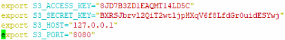
key信息对照test用户
(3)列出当前bucket
./s3client list

(4)创建一个bucket并上传文件
./s3client create files
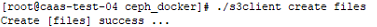
./s3client upload files s3key.sh /
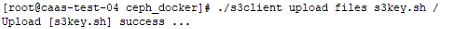
./s3client list files
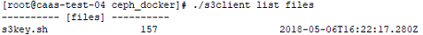
5.建立MDS并测试文件系统
Ceph MDS - 元数据服务器，为ceph文件系统存储元数据。
docker run -d --net=ceph-net -v ${DIR}/lib/ceph/:/var/lib/ceph/ -v ${DIR}/ceph:/etc/ceph -e CEPHFS_CREATE=1 --name=mds1 ceph/daemon mds
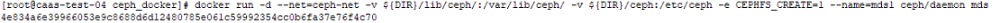
查看部署情况：
docker exec -ti mds1 ceph mds stat
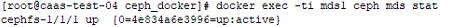
docker exec -ti mds1 ceph fs ls
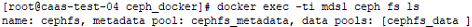
6.建立MGR
Ceph MGR - 集群管理组件
docker run -d --net=ceph-net -v ${DIR}/ceph:/etc/ceph -v ${DIR}/lib/ceph/:/var/lib/ceph/ --name=mgr1 ceph/daemon mgr
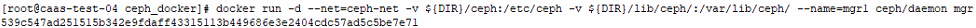
docker ps
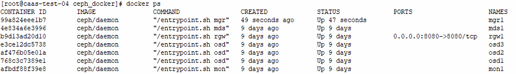
docker exec -it mon1 ceph -s
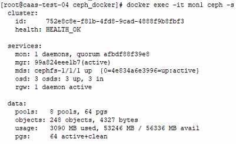
以上，Ceph集群容器化部署完成。